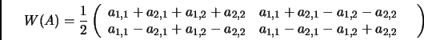
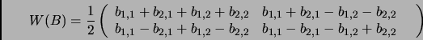

Next:
Product of A and
Up:
A example
Previous:
Conventional Multiplication
Wavelet Transform of two
2 matrices
For a wavelet transform on both matrix A and B, the results are:


Daniel Beatty 2003-06-03